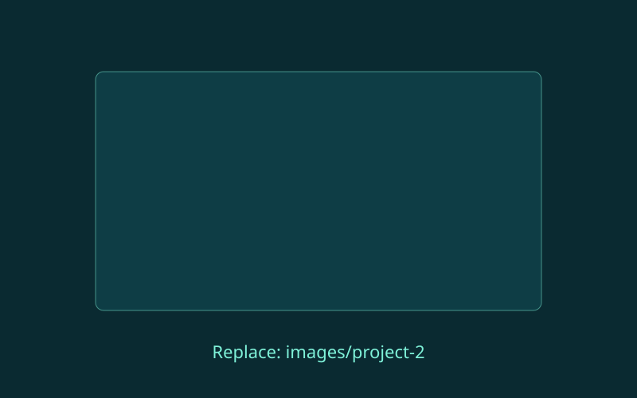

[Describe what wasn't working: who the users were, what slowed them down, and what was at stake. Two to four sentences is plenty.]
Case study · Project type or industry
Interactive touchscreen wall
[One or two sentences: what the product is and the headline result of your work.]
- Role
- [Your role]
- Team
- [Who you worked with]
- Timeline
- [How long]
- Platform
- [Mobile, web, kiosk...]
The problem
What I did
- [A key step or decision, and why you made it.]
- [Another step: research, testing, a design change.]
- [Another step: how you worked with the team.]

Outcome
[What improved. Use numbers if you have them, or describe the change in how people worked.]